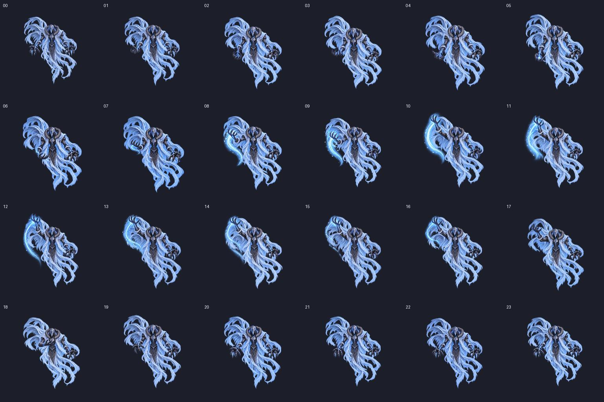

24프레임 · 손 궤적 포함 · 1152px 셀 · PPU 24 · 중앙 피봇00은 Idle 마스터에 동일한 투명 패딩만 추가. 이 미리보기는 아트 검토이며 Unity 클립은 생성하지 않았습니다.
발동 이벤트 후보: 10~12. 실제 타이밍은 얼음 VFX와 연결하며 조절하세요. 24fps는 검토용 1초 재생입니다. 프레임별 갑옷·손·천의 미세 변화와 궤적 소멸은 최종 사용자 검토 대상입니다.
